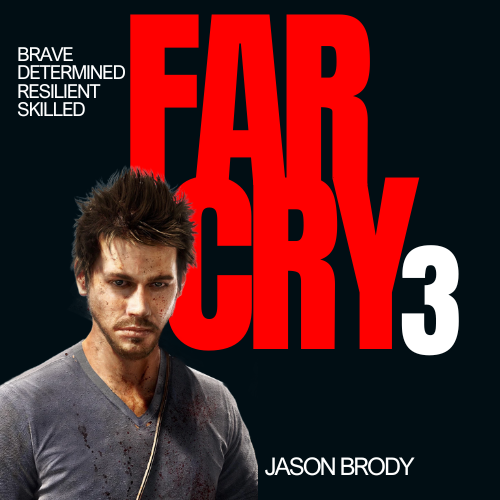

Far Cry 3 is an open-world first-person shooter developed by Ubisoft, set on a lawless tropical island. The game follows Jason Brody, a young man who must rescue his kidnapped friends and survive among pirates, mercenaries, and madness. As he explores the island, Jason is forced to adapt, turning from an average tourist into a deadly warrior. Known for its intense storytelling, unpredictable villain Vaas Montenegro, and lush, dangerous environment, Far Cry 3 is praised for blending freedom, chaos, and psychological depth into one gripping adventure.
jason Brody
You play as Jason. He begins as an ordinary tourist but transforms into a ruthless warrior. His journey is about survival, revenge, and identity as he gets consumed by the violence and mysticism of Rook Island.
Vaas Montenegro
Vaas is your first major threat. His insanity, unpredictability, and personal taunts make him a constant psychological and physical obstacle. He’s the face of chaos on the island.
Citra Talugmai
Citra is both a guide and a manipulator. She presents herself as a savior of the island and sees Jason as a chosen warrior. She drives the mystical aspect of the game, leading Jason deeper into the culture of the Rakyat./p>
Hoyt Volker
A calm, manipulative businessman and slaver. Unlike Vaas’s wild nature, Hoyt represents systematic, corporate evil. He is the true mastermind controlling the island’s drug and slave trade.
Dr. Earnhardt
Eccentric scientist who helps Jason with medicine and missions. Despite his strange behavior,helped to rescue your friends, he's a valuable friend.
Dennis Rogers
Dennis is your first contact with the Rakyat. He trains Jason in the ways of the warrior and introduces him to Citra and the idea of becoming a hero for the island people.
Grant Brody
Grant’s military background makes him a natural leader. His death in the opening scene pushes Jason onto the path of violence and revenge.
Riley Brody
Riley is captured by Hoyt. Rescuing him becomes one of Jason’s central motivations. His survival is tied to Jason’s inner conflict between family and the warrior path.
Sam Becker
A charismatic, slightly eccentric German with a love for military tactics and loud humor.Vital for infiltrating Hoyt’s circle — without Sam’s guidance, Jason wouldn’t be able to get close enough to assassinate Hoyt.
Buck Hughes
A crude and sadistic mercenary with a twisted sense of humor and an obsession with control. Holds Keith Ramsay captive and manipulates Jason into retrieving the ancient Knife of Xian through dangerous missions.
Liza Snow
Jason’s girlfriend who represents his life before the island’s chaos. Caring and determined, she tries to keep their group safe while struggling to understand the violent changes in Jason as he drifts further from his old self.
More Characters
Far Cry 3: Descent into Madness
Far Cry 3 follows the story of Jason Brody, a thrill-seeking young man whose vacation turns into a nightmare when he and his friends are kidnapped by pirates led by the unstable Vaas Montenegro on the lawless Rook Islands. After witnessing his brother Grant’s murder and escaping captivity, Jason is rescued by the native Rakyat tribe and begins a journey of transformation from an ordinary man into a ruthless warrior under the guidance of Citra, the tribe’s mysterious leader. As Jason hunts down Vaas and later the powerful drug lord Hoyt Volker to save his remaining friends, he becomes increasingly consumed by violence and vengeance. After killing both antagonists and rescuing his brother Riley, Jason is faced with a final choice: return to a normal life with his friends or embrace his dark transformation by killing them to stay with Citra and fulfill her prophecy. The game’s dual endings explore themes of identity, madness, and the cost of power, making Far Cry 3 a gripping tale of survival, morality, and descent into savagery.
"Each mark on my skin is a step deeper into the jungle, a symbol of the warrior I'm becoming." -jason brody

I’m not a hero. I’m not a warrior. I’m just a man who wants to save his friends
You have to know the rules before you can break them. That's what I do — break the rules.